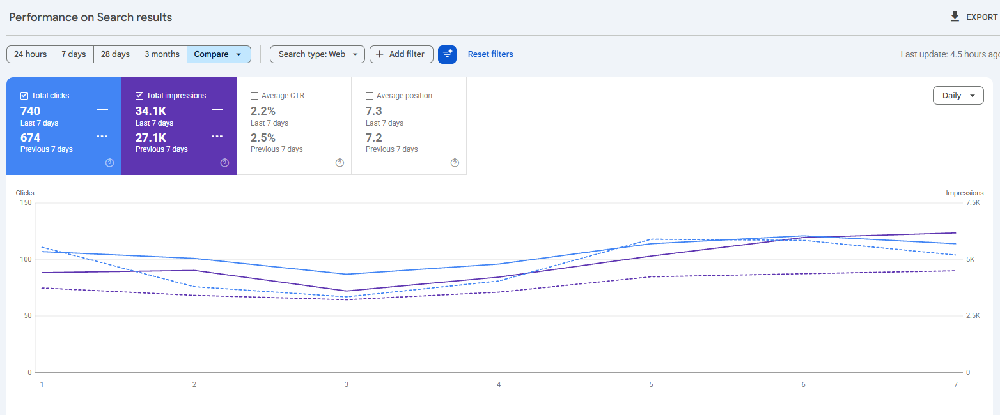
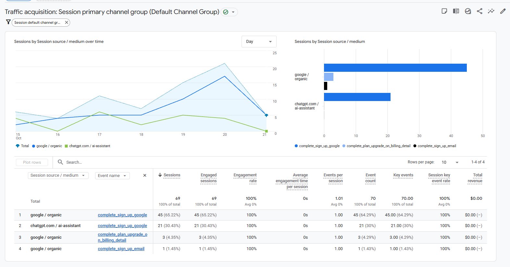
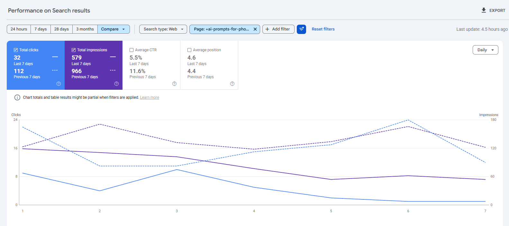

Promer
Báo cáo tuần · 15–21/10/2026
SEO & AI Search
Người dùng đang tìm thấy Promer từ đâu, điều gì đang hiệu quả, và tuần tới làm gì.
Nguồn: Google Search Console · Google Analytics 4 · 15–21/10 so với 8–14/10
Hiện trạng · Google Search Console
Click từ Google tăng 10%, lượt hiển thị tăng 26%
Click
740
tuần trước 674 · +10%
Impressions
34.1K
tuần trước 27.1K · +26%
CTR · vị trí TB
2.2% · 7.3
tuần trước 2.5% · 7.2

Ý nghĩa: lượt hiển thị tăng nhanh hơn click nên CTR giảm (2.5% → 2.2%). Riêng query "on prompt ads" (từ khoá thương hiệu của bên khác) thêm 1,745 impressions.
Promer · SEO Weekly 15–21/10/2026 · 2
Hiện trạng · GA4 · theo source / medium
GA4: Organic Search đi ngang, AI Assistant +37%
| Kênh · source / medium | 15–21/10 | 8–14/10 | Δ |
|---|---|---|---|
| Organic Search | 2,698 | 2,672 | +1% |
| · google / organic | 2,007 | 1,992 | +1% |
| · bing / organic | 278 | 453 | −39% |
| · arrm, expu-arrm, artt, expu-artt * | 310 | 0 | mới |
| · nguồn khác (msn, yahoo…) | 103 | 227 | |
| AI Assistant | 767 | 561 | +37% |
| · chatgpt.com | 565 | 428 | +32% |
| · claude.ai | 77 | 79 | −3% |
| · gemini.google.com | 31 | 39 | −21% |
| · arrm, expu-arrm, artt, expu-artt * | 76 | 0 | mới |
| · grok, perplexity, meta.ai… | 18 | 15 |
Lưu ý: tuần này team test tool affiliate nội bộ (OneCommerce) để đẩy traffic cho blog/landing page. * Các nguồn arrm / artt / expu-* đến từ đợt test này. Tuần trước (8–14/10) cũng có traffic tăng bất thường, nên mức tăng/giảm ở bảng chưa phản ánh đúng thay đổi thật. Cần thêm 1 tuần để xác minh.
Promer · SEO Weekly 15–21/10/2026 · 3
Hiện trạng · Đăng ký
67 đăng ký mới từ Organic và AI, 3 lượt nâng gói
Organic Search
46
tuần trước 28 · Google 46
AI Assistant
21
tuần trước 14 · ChatGPT 21
Trả tiền
3
nâng gói, từ google / organic (tuần trước 0)

Ý nghĩa: đăng ký từ ChatGPT tăng 13 → 21, trong đó 15 đến từ trang /tools/product-image-to-video-ai (tuần trước 6).
Promer · SEO Weekly 15–21/10/2026 · 4
Win 1
/winning-ad-library/: click tăng 55%
Click
135
tuần trước 87 · +55%
Impressions
7.62K
tuần trước 6.07K · +26%
CTR · vị trí TB
1.8% · 7.4
tuần trước 1.4% · 6.8
Ý nghĩa: click và CTR cùng tăng (1.4% → 1.8%), cao nhất ngày 19/10. Trang nước hoa 22 click (tuần trước 7), "perfume prompt generator" 3 click.
Promer · SEO Weekly 15–21/10/2026 · 5
Vấn đề
Blog photoshoot: click giảm 112 → 32
Click
32
tuần trước 112 · −71%
Impressions
579
tuần trước 966 · −40%
CTR · vị trí TB
5.5% · 4.6
tuần trước 11.6% · 4.4

Nhận định: vị trí giữ ~4.5. Tuần trước trang này có click tăng bất thường (tháng 9 ~3/ngày, 2–14/10 lên 14–24/ngày), nên mức giảm có thể chưa phải giảm thật.
Promer · SEO Weekly 15–21/10/2026 · 6
Cơ hội
"generator": vị trí lên 19.2 → 16.3, vẫn ở trang 2
Click
14
tuần trước 3
Impressions
705
tuần trước 415 · +70%
Vị trí TB · CTR
16.3 · 2%
tuần trước 19.2 · 0.7%
Giải pháp: tiếp tục tối ưu landing page /tools/ để đưa nhóm này lên trang 1. "ai ugc video generator" 3 click / 66 impressions, "ugc ai video generator" 51 impressions chưa có click.
Promer · SEO Weekly 15–21/10/2026 · 7
Đã làm tuần này
Ra mắt 7 landing page /tools/ mới
| Trang | URL | Impr. đến 22/10 | Google (GSC) |
|---|---|---|---|
| AI TikTok UGC | /tools/ai-ugc-tiktok-generator | 0 | chưa xuất hiện |
| AI YouTube Shorts Generator | /tools/ai-youtube-shorts-generator | 7 | từ 20/10 |
| AI Perfume Product Image Generator | /tools/perfume-product-image-generator | 13 | từ 21/10 · vị trí ~4–6 |
| AI Jewelry Image Generator | /tools/ai-image-generator-for-jewelry | 9 | từ 21/10 |
| Etsy Product Photo Generator | /tools/etsy-product-photo-generator | 8 | từ 22/10 |
| Cyber Monday Advertisement Maker | /tools/cyber-monday-advertisement-maker | 5 | 22/10 · 1 click, vị trí 2 |
| Black Friday Ad Generator | /tools/black-friday-ad-generator | 0 | chưa xuất hiện |
Ý nghĩa: tính đến 22/10, 5/7 trang đã có impressions trên Google. Black Friday và Cyber Monday ra trước mùa sale cuối tháng 11. Tuần tới theo dõi index và từ khoá của từng trang.
Promer · SEO Weekly 15–21/10/2026 · 8
Next steps · tuần 27–31/10
Việc tuần này
- Theo dõi thêm 1 tuần để xác minh số GA4 sau đợt test tool affiliate
- Theo dõi index và impressions của 7 trang /tools/ mới
- Tối ưu landing page /tools/ (nhóm "generator")
- Kiểm tra đăng ký Organic vào thẳng app /sign-in từ 19/10
Promer · SEO Weekly 15–21/10/2026 · 9
Phụ lục · tham khảo
Số GA4 nếu loại các trang có traffic bất thường
| Kênh (đã lọc) | 15–21/10 | 8–14/10 | Δ |
|---|---|---|---|
| Organic Search | 1,161 | 894 | +30% |
| AI Assistant | 355 | 192 | +85% |
Các trang loại ra
/blog/ai-prompts-for-photoshoot
/tools/ai-ugc-video-generator
/ad-animation
/lp/* · (not set)
Số trong deck chưa loại các trang này; đây là phép đối chiếu tham khảo. Click Google (GSC) +10% là số do Google đo.
Promer · SEO Weekly 15–21/10/2026 · 10